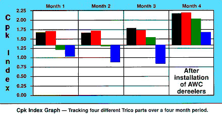

Is the payoff the last place you
look when attempting to increase spring quality?
See how advanced payoff technology has turned the dereeler into an
essential component for boosting spring quality and production profitability.
Perception. To perceive means to become aware of something through
the human senses of sight, hearing, touch, smell, or taste.
But how often our perception is deceiving. For example, you are
traveling in an unfamiliar city when you become hungry. As you search
for a restaurant, what factors do you consider before entering?
Perhaps you quickly evaluate the cleanliness of the building's exterior
or how busy the establishment appears to be. What price range the
décor indicates might be another factor. Yet after all these
judgements calls, do you really know how good the food is or what
sort of service you will receive by that which you see from the
outside? It is our perception of a given situation that often dictates
our response. Frequently though, perception is wholly different
from reality.
So how does this apply to the quality of springs? Well, if a spring
manufacturing facility discovered that the quality of one of its
parts was substandard, what areas of the production line would generally
be focused upon in determining the problem? Where would you look?
First, perhaps the coiler and the tooling. Second, the supplied
wire package and its consistency. Then, then maybe the straightener.
The normal perception is that these particular factors are the only
ones that matter to the maintenance and improvement of spring quality.
So what is the problem?
The wire dereeler has often been viewed as having no positive effect
on production quality. Unfortunately, payoff performance is often
based only on whether the bearing on the "Lazy Susan"
is still allowing the table to turn. Although more and more companies
are beginning to see the benefits of working with powered dereelers,
most still seem to perceive that this kind of equipment has little
to do with quality assurance. The wire dereeler is usually the last
place one looks when striving for quality excellence.
Should this be so? Is there any reason to consider the constant
tension dereeler available today? Are they a viable means of increasing
spring quality? Consider the following case history. |
Payoff
Pays Off
The Trico Corp., is a major manufacturer of automotive
windshield wipers. In fact, the company's founder, John Oshei, invented
the first wiper blade back in 1917 after being involved in an automobile
accident during a rainstorm. Today in Buffalo, NY plant, the company
manufacturers the majority of the springs used in wiper blades, worldwide.
Spring quality is essential to the performance of a windshield
wiper blade. If the "load" is insufficient, the blade
will not have enough pressure to maintain contact with the windshield.
Conversely, if the spring exerts too much force on the wiper's "arm,"
the blade will drag across the windshield and cause "chatter."
It is therefore imperative that the springs utilized in these wiper
blades are products made with stringent quality control.
Approximately six years ago, Trico decided to look into methods
of improving production efficiency, as well as the level of quality
in the spring department. Management was sure that there had to
be a more productive, quality-orientated means of dereeling their
wire than the usual methods of cutting 20 to 40 pounds of wire off
the carrier and then running the material on a non-power swift.
As they searched for new methods of wire decoiling, they discovered
Accra-Wire Controls (AWC).
Carl Dischner, Spring Department Supervisor, related, "Accra-Wire
seemed to provide the best overall package for our needs. The machines
were innovative and the technology was better than we had seen in
any other payoff. The service they offered, along with the affordability
of the machines, made the decision clear for us."
Trico decided to try its first Accra-Botic dereeler, like the one
shown in at right, in 1990. The results were better than expected.
"The dereeler's ability to maintain a constant low tension
on the wire was the key to our quality improvement," continued
Dischner. "With our old reels, the wire would be pulled forcefully
by the feed and then go slack. The constant inconstancy was causing
variances in our free lengths as well as our load deflection."
Constant tension is a necessary for proper decoiling of wire. As
noted with non-powered (and even many powered dereelers) wire tension
is not constant. This factor hinders the feed's ability to maintain
consistent feed lengths. In fact, according to Don Senko, Quality
Manager at Trico, the company attained 62% improvement in free lengths
and an 85% improvement in load deflection consistency by adding
constant tension dereelers.
Senko explained, "The extension spring with a formed hook
on each end is our primary type of spring. In our application, correct
alignment, of the hook ends is important since, if out of alignment,
it will place undue torque at the point of force thus neutralizing
the desired effect."
How did the new wire dereeler affect this particular aspect of
quality control? Senko continued, "The automatic (constant
tension) wire payoffs allowed us to achieve greater accuracy, reduced
variability, and reduced costs since we were able to control the
positions of the hooks and maintain uniformity in the back pitch."
The Cpk Index Graph below illustrates improvement in quality for
four Trico parts as a result of installing automatic constant tension
wire payoffs.

Additional benefits were realized in the area of increased production
efficiency. By using these payoffs, Trico found that it had the
capability to place the entire carrier of wire on the dereeler.
With that arrangement, coiler downtime was minimized. As a matter
of fact, a single package of wire containing four shifts' worth
of process material is now loaded onto each of the company's 16
AWC constant tension dereelers.
Moreover, labor savings were realized. "We used to have six
people sorting springs to ensure quality," Senko said. "Because
of the consistent quality we now maintain, we need only one person."
Overall, Trico has reduced labor cost by 60% to 80% in the spring
department. Another area of savings involves maintenance. According
to Senko, the company has seen a 40% to 70% reduction in tooling
maintenance since installing the new dereelers.
In the analysis, Trico has increased its ability to cost effectively
produce quality springs. The simplicity of this new arrangement
has reduced labor costs and scrap, increased production, and enhanced
quality. |